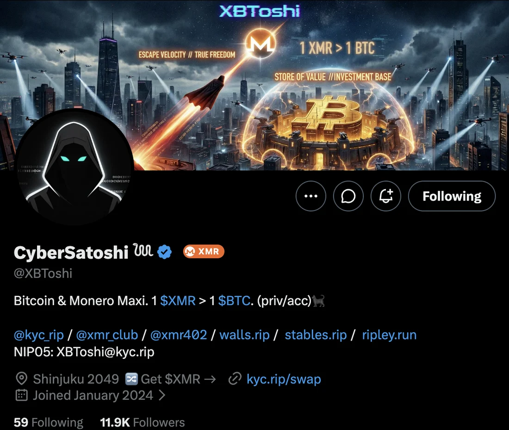
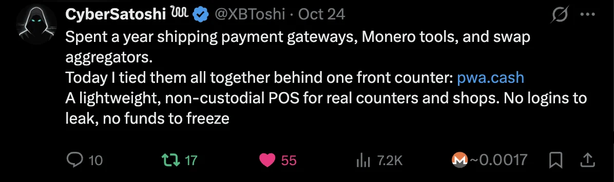
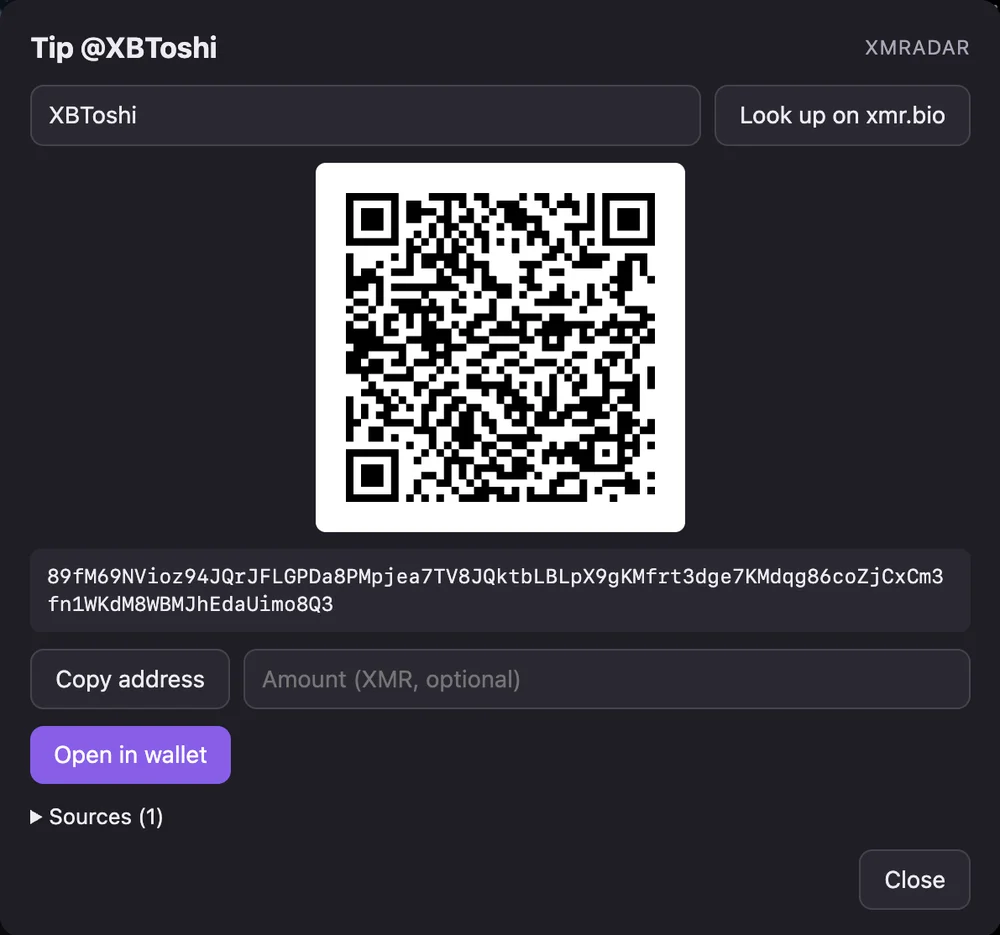

satoshi.fanXMR· 2h
Ran a node at home for a year. Notes on bandwidth, disk and what broke.
ReplyRepostɱ 0.006 ✓
An XMR badge on X for people who published a Monero address on Nostr or xmr.bio. Click it to tip from your own wallet; a Xap records the tip on Nostr. Totals separate tips the recipient confirmed from ones that are only claimed.
On an exchange's order page, XMRadar checks the signed NKIP-0001 receipt, or the operator's letter of guarantee (PGP or MistProof), against the addresses on the page and in what you copy. A verified copy is saved in your browser for disputes. The toolbar shows the site's xmr.club grade, with a warning for open incidents.
Exchange data from xmr.club, licensed CC BY 4.0.
A throwaway address in one click for sign-ups. New mail shows up as a notification with the code already pulled out.
qz4r8m@ghostmail.kyc.rip42 minRight-click a post on X, Bluesky, Mastodon or any page, or hover it and press Alt+Shift+N. Text and images go to your relays, signed by your own Nostr signer.
Real screenshots from @XBToshi's profile, with XMRadar installed.


~ means claimed by the tippers, not yet confirmed).
XMRadar runs in your browser. It has no account and no server of its own. The code is open, so you can check every claim below.
KYC-rip/xmradarRead the source →
Not in the Chrome or Firefox stores yet. Download the zip from GitHub Releases, unzip it, and load it from chrome://extensions (Developer mode → Load unpacked), or in Firefox 140+ from about:debugging.
Works with any NIP-07 signer, such as Alby or nos2x, and any Monero wallet that opens monero: links.
gh attestation verify {{CHROME_ZIP}} -R KYC-rip/xmradar
All releases and checksums →